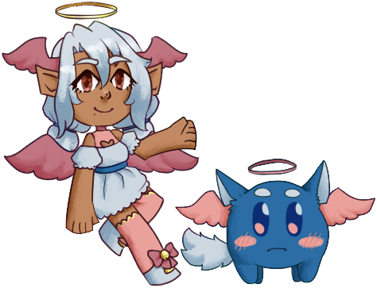

SSP Angel

Permissions (regarding fanworks, redistribution, etc.)
SSP Angel is a pair of office workers that specialize in providing assistance in the use and development of ukagaka, made by the Angel Team, which includes myself, Ayakamtka, Yuyudev, and Zichqec. It uses the Angelbox balloon. Additionally, it includes compatibility with the Angelbox (Biblically Accurate) and Cotton Candy balloons, which must be downloaded separately.
Features
- Informational dialogues about the usage of ghosts and SSP
- A glossary of ukagaka-related terms
- Tips for ghost developers
- Fun banter between friends/coworkers
- Petting, pestering, and waving mouse interactions!